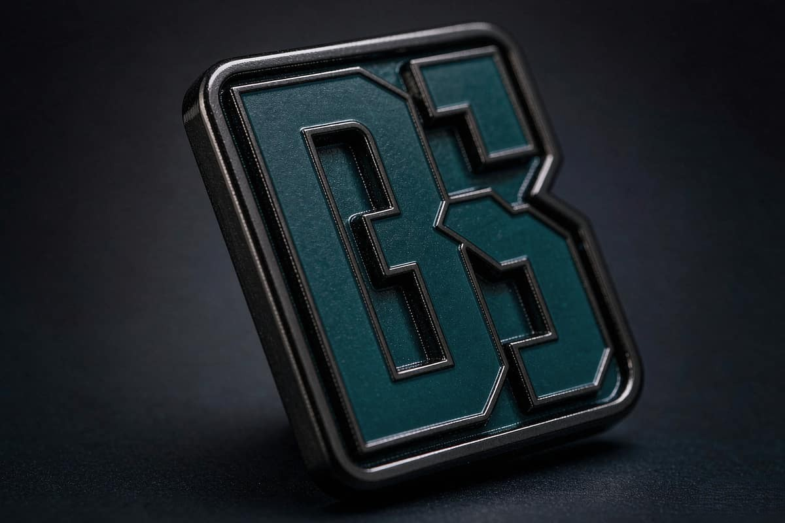
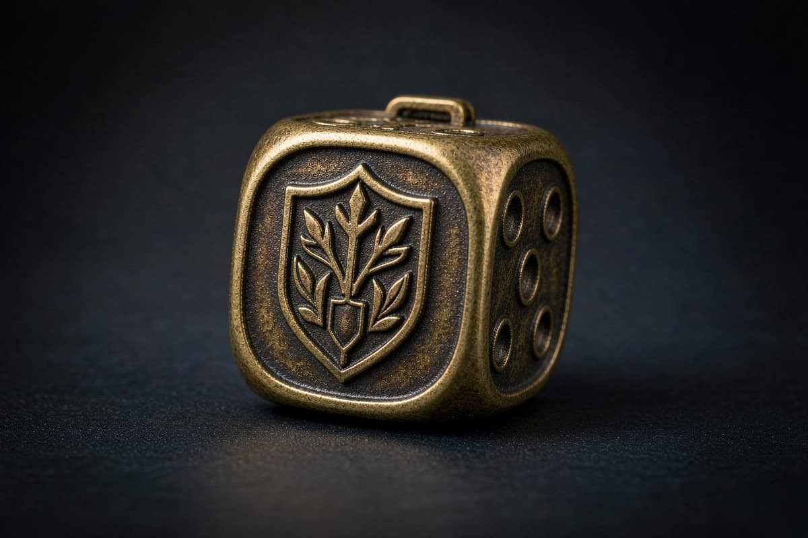
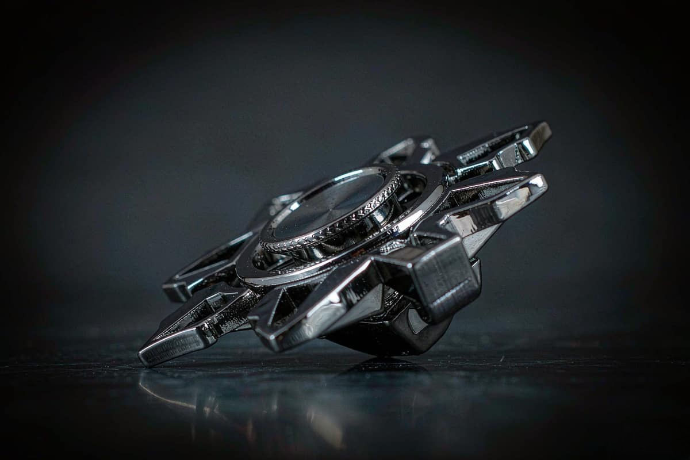
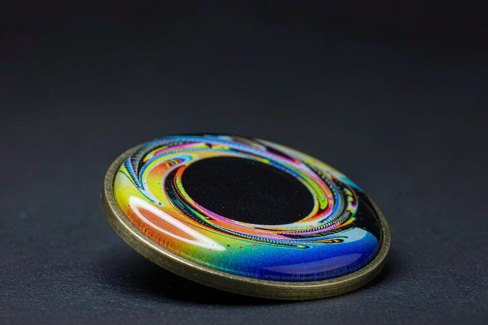

Wholesale custom enamel pins, made in our own workshop
Every pin below is cut, stamped, plated, filled and inspected inside our 8,000 sqm workshop in Kunshan. Pick the process that fits your artwork, then send us the design and we will quote the exact specification.
Five processes, each with a different strength
The process changes how your artwork behaves in the hand, what it can hold and how long it lasts. Below is what each one is actually good at, so you can pick before you send anything over.
Hard enamel
The workhorse lapel pin. Enamel is filled level with the metal surface and polished flat, so the raised metal line stays crisp and the colour sits flush with the edge.
- Base metalBrass, iron or stainless steel
- Typical size14 mm to 60 mm (0.55 in to 2.36 in)
- ColourUp to 4 Pantone references
- ToolingCNC steel mould, cut in our own tooling shop
- SurfaceGlossy, flat, flush with raised metal lines
Best suited to
Corporate identity pins, event giveaways, club and league badges, retail logo pins
Technical detail
Soft enamel
Colour is poured into a recessed cavity and stops below the metal rim. That extra depth is why soft enamel reads brighter and glossier than hard enamel, and it takes more colour references per pin.
- Base metalBrass, iron or stainless steel
- Typical size14 mm to 60 mm (0.55 in to 2.36 in)
- ColourUp to 6 Pantone references
- ToolingCNC steel mould, cut in our own tooling shop
- SurfaceRecessed, glossy colour below a raised metal rim
Best suited to
Multi-colour designs, cartoon artwork, mascots, layered logos, bright retail pins
Technical detail
Die struck metal
A single piece of metal, struck and stamped. No enamel, no colour separation, nothing to chip. The visual interest comes entirely from relief depth, edge treatment and the contrast between polished and sandblasted surfaces.
- Base metalSolid brass, bronze or iron
- Typical size16 mm to 70 mm (0.63 in to 2.76 in)
- ColourMetal contrast only, no enamel
- ToolingCNC steel die, struck in our own press shop
- SurfacePolished relief against a sandblasted or antique recess
Best suited to
Military and service awards, heritage badges, minimalist logos, vintage finish programs
Technical detail
3D die cast
Cast in zinc alloy from a two-part mould, which allows genuine three-dimensional relief, internal cutouts and moving parts such as spinners and hinged elements that cannot be stamped.
- Base metalZinc alloy
- Typical size20 mm to 80 mm (0.79 in to 3.15 in)
- ColourPlated, with optional painted detail
- ToolingTwo-part die casting mould, cut in our own tooling shop
- SurfaceMulti-level relief with cast cutouts and moving parts
Best suited to
Mechanical designs, spinner and rotating pins, sculptural badges, automotive clubs
Technical detail
Offset printed
Full colour CMYK artwork printed onto a metal blank and sealed under a clear epoxy dome. No steel mould is cut, so gradients, photography and complex artwork are possible at short lead times.
- Base metalStainless steel or brass blank
- Typical size16 mm to 60 mm (0.63 in to 2.36 in)
- ColourUnlimited full colour CMYK
- ToolingNo steel mould required
- SurfacePrinted under a clear non-yellowing epoxy resin dome
Best suited to
Photographic artwork, photographic portraits, gradients, fast-turn promotional runs
Technical detail
Hard enamel pins
The workhorse lapel pin. Enamel is filled level with the metal surface and polished flat, so the raised metal line stays crisp and the colour sits flush with the edge.
| Base metal | 0.3 mm brass, 0.3 mm iron, 0.4 mm stainless steel |
| Plating thickness | 0.2 to 0.5 microns of plating over a copper strike |
| Enamel depth | Filled flush, then lapped on a flat stone |
| Colour accuracy | Within one Pantone step on a calibrated line |
| Wear resistance | Handles daily pocket use without scratching the enamel |
| Tooling life | Mould archived three years for repeat runs |

Soft enamel pins
Colour is poured into a recessed cavity and stops below the metal rim. That extra depth is why soft enamel reads brighter and glossier than hard enamel, and it takes more colour references per pin.
| Base metal | 0.3 mm brass, 0.3 mm iron, 0.4 mm stainless steel |
| Cavity depth | 0.15 mm to 0.3 mm recessed below the rim |
| Colour accuracy | Within one Pantone step on a calibrated line |
| Colour count | Up to 6 Pantone references per pin |
| Surface | Glossy convex fill, no flat lapping stage |
| Tooling life | Mould archived three years for repeat runs |

Die struck metal pins
A single piece of metal, struck and stamped. No enamel, no colour separation, nothing to chip. The visual interest comes entirely from relief depth, edge treatment and the contrast between polished and sandblasted surfaces.
| Base metal | Solid brass, bronze or iron, 1.0 mm to 1.5 mm |
| Stamping force | Hydraulic friction press rated to 200 tonnes |
| Relief depth | 0.4 mm to 1.2 mm depending on design complexity |
| Surface treatment | Polished, brushed, sandblasted, antiqued, matte |
| Colour | None. All contrast comes from the metal itself |
| Durability | The most durable option, no enamel to chip or crack |

3D die cast pins
Cast in zinc alloy from a two-part mould, which allows genuine three-dimensional relief, internal cutouts and moving parts such as spinners and hinged elements that cannot be stamped.
| Base metal | Zinc alloy, cast in a two-part mould |
| Mould capacity | 8 hot-chamber die casting machines |
| Relief depth | Multi-level, from 1.5 mm upward |
| Moving parts | Spinners, hinged and rolling elements supported |
| Plating | Full plating range including antique and matte |
| Weight | Heavier than a stamped pin, which suits larger designs |

Offset printed pins
Full colour CMYK artwork printed onto a metal blank and sealed under a clear epoxy dome. No steel mould is cut, so gradients, photography and complex artwork are possible at short lead times.
| Base metal | Stainless steel or brass blank |
| Print process | Offset lithography, full colour CMYK |
| Cover | Clear epoxy dome, non-yellowing |
| Tooling | None. A print plate is prepared per design |
| Lead time | 5 to 7 business days, the shortest option we run |
| Best for | Artwork with gradients, photography or many colours |


Plating, enamel colour and backings
The process decides the pin. Everything below decides whether the finished pin looks right in the hand, on a garment or on a shelf.
Plating finishes
Shiny 24K gold, matte 24K gold, antique gold, silver, brushed silver, black nickel, matte black nickel, rose gold, copper, antique brass, antique silver and matte ruthenium. Our plating line is licensed and in-house, and every rack is XRF tested so the finish we quote is the finish that ships.
Colour matching
Give us Pantone references and we match them on a calibrated line, then hold that standard for the whole run. Colours not held to a Pantone standard are matched to the sample you approve, which is why we always ask for a physical sample first.
Backings and attachments
Standard butterfly clutch with a rubber PVC cap is the default. For heavier pins, a safety pin, a screw back, a magnetic back or a double clutch is available. We will recommend the right one once we know the size and weight of the design.
Packaging options
Single-piece polybag, blister on a backing card, header bag with your own card printed, gift box, or bulk packing into your own carton for direct shelf distribution. Packaging is specified per order, and the bulk order guide explains how each option affects the packing and delivery steps.
What buyers ask before ordering enamel pins
There is no minimum order quantity. A single piece can be produced to check the finish and the clutch, a full set of samples can be ordered across the plating range, or a production run can be scheduled. Volume discounts apply automatically against the quantity you order, and the quotation confirms the applied rate before you commit.
Standard production runs 7 to 10 business days after the sample is approved. A 5 business day rush is available when a production window is available, and we confirm that window when we quote. Tooling is cut in our own shop, so there is no queue between your order and the machines that make it.
Artwork in AI, EPS, PDF or PNG is best, but a photograph or even a rough sketch is enough to begin. We vectorise in house and return a 2D and 3D CAD proof free of charge within 12 hours. If you already have vector files, sending them simply shortens the proof stage.
Yes. Different sizes of the same design usually share one mould and can be produced together. Different processes need separate moulds, so they are quoted and scheduled separately, but they can still ship in one carton. Tell us the full breakdown and we will plan it as one delivery.
The 2D and 3D CAD artwork and the quotation carry no charge. A physical sample is produced so you can judge plating, enamel colour and the clutch before the production run, and the sample cost is credited against the production order. Sample quantities of a single piece are accepted with no minimum.
We ship to 40 countries and more, by DHL, FedEx or UPS. DDP terms are standard, so the delivered cost is what you agree to. For distributor programmes we can blind drop-ship to your warehouse or to a fulfilment partner, with your branding only, never ours.
Tell us the process, the size and the quantity
You get a 2D and 3D CAD proof with an itemised quotation within 12 hours, before anything is cut. No minimum order quantity, samples from a single piece.